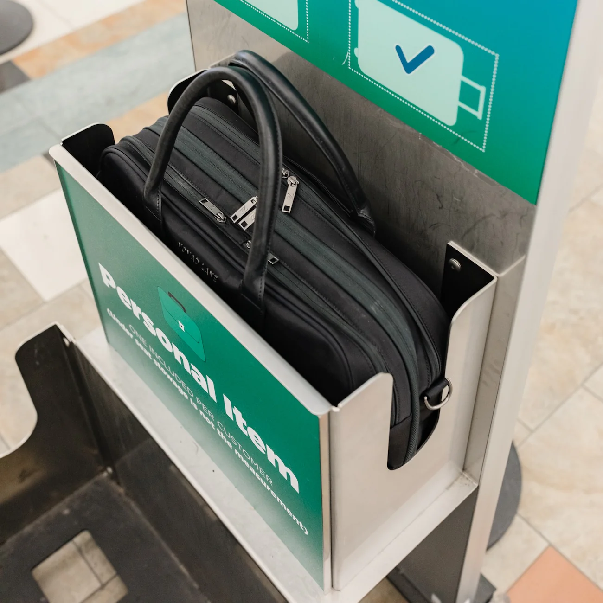
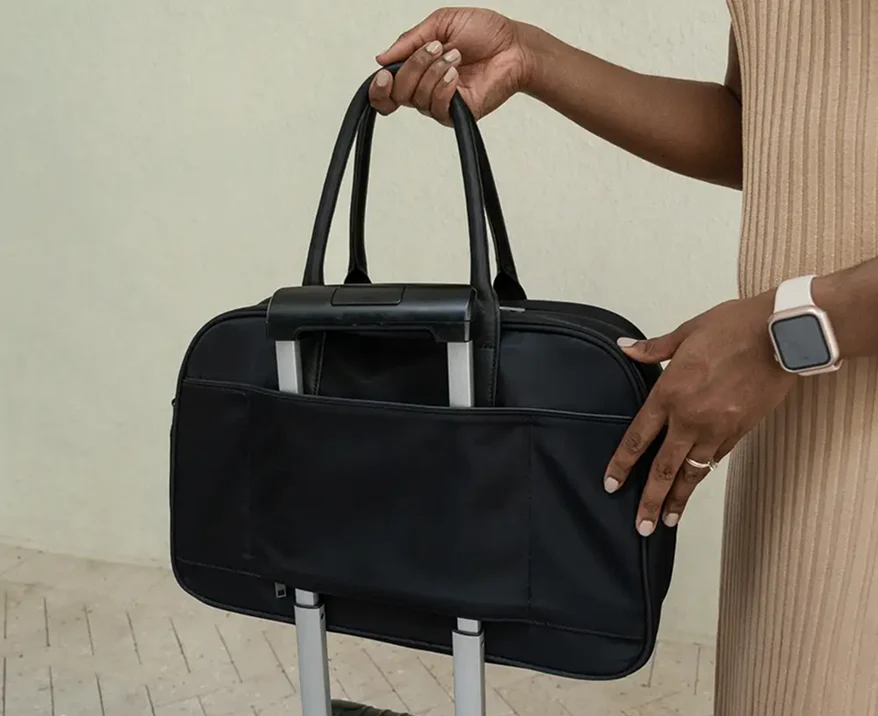
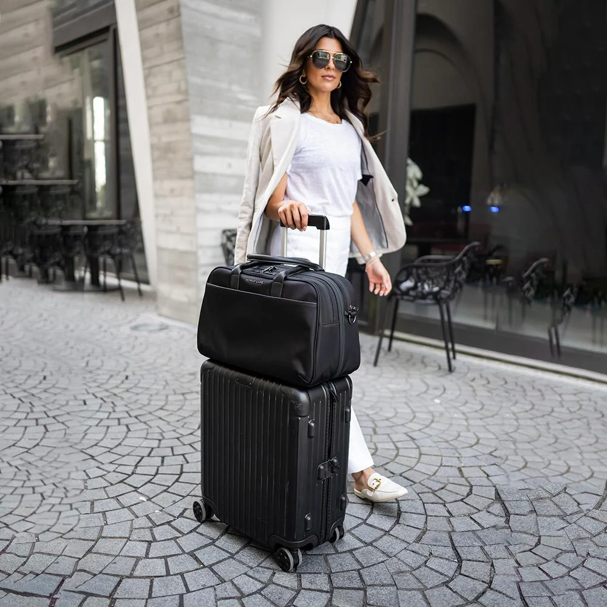

There's a moment every frequent flyer remembers: the trip where everything finally clicked. The anxiety disappeared. The rushing stopped. Travel became... easy. We asked 50 road warriors what they wish they'd known sooner. Their answers might save you years of learning the hard way.
Checked bags are a subscription you didn't know you signed up for
At $35-70 per flight, checking a bag on 15 round trips costs you over $1,000 a year. That's not a travel expense—it's a recurring fee for the privilege of waiting 30 minutes at baggage claim and occasionally losing your belongings.
The math is brutal, but once you see it, you can't unsee it.
The overhead bin is not guaranteed real estate
Basic economy fares now represent 40% of domestic tickets sold—and most don't include overhead bin access. Even when they do, boarding Group 4 means watching flight attendants gate-check your roller bag anyway.
The only luggage space that's truly yours? The area under the seat in front of you. It's not glamorous, but it's guaranteed.
You're probably packing for a trip you're not taking
That "just in case" jacket. The extra pair of shoes. The third phone charger. Most travelers pack for hypothetical emergencies, not actual itineraries. The result: bags stuffed with items that never leave the hotel room.
If you haven't worn or used something on the last three trips, it doesn't need to come on the next one.
Hotel toiletries are actually fine
Unless you have specific dermatological needs, the shampoo at your Marriott will get you through a three-day conference. That TSA-compliant toiletry kit you've been lugging around? It's taking up space that could hold another day's outfit.
The frequent flyers we talked to were split: half had eliminated personal toiletries entirely, half kept only the essentials (medications, skincare specifics). Zero missed their travel-sized body wash.
Organization isn't optional—it's the whole game
Here's what separates anxious travelers from calm ones: knowing exactly where everything is. Not vaguely. Exactly. Laptop in the same pocket every time. Passport in the same spot every time. Chargers, headphones, snacks—all with designated homes.

This isn't about being Type A. It's about eliminating the cognitive load of "where did I put that?" when you're rushing to make a connection.
Your bag should have a system, not just space
Traditional bags treat interior space as a single cavity. You stuff things in, they shift during transit, and you spend ten minutes at your hotel reconstructing your packing system. This is why experienced travelers obsess over bag architecture—not just capacity.

Editor's Pick
Nomad Lane Bento Bag
Designed like a Japanese bento box—everything has a compartment. Fits under any airline seat, holds 3+ days of clothes, includes a padded laptop sleeve. The bag that started the personal-item-only movement.
Shop Now — $298The security line is a dress rehearsal, and you should practice
Veteran travelers treat TSA like a choreographed routine: laptop out before reaching the bins, shoes loosened, pockets emptied while still in line, bag positioned for easy scanning. They're through in 90 seconds while everyone else fumbles.

The trick? Bags with dedicated laptop compartments that open flat for TSA. No digging, no holding up the line, no stress.
Wrinkle-resistant fabrics change everything
The limiting factor in packing light isn't space—it's wrinkling. Roll a cotton dress shirt and you'll look like you slept in it. But modern performance fabrics (merino wool, technical blends, wrinkle-free cotton) pack tight and arrive ready to wear.
"I rebuilt my entire travel wardrobe around wrinkle-resistant pieces. It took about six months, but now I can pack for a week in a personal item." — Marcus, management consultant
The trolley sleeve isn't a luxury—it's load-bearing infrastructure
Any bag you carry through an airport should attach to your rolling suitcase. Full stop. Holding a separate bag while dragging luggage is an ergonomic nightmare that compounds over a long travel day.
Look for a pass-through sleeve that sits flush against the suitcase handle. Your shoulders will thank you.
The best flight is the one you can walk off and straight into an Uber
There's a specific pleasure that frequent flyers chase: landing, standing up, and walking directly to ground transportation. No carousel. No waiting. No anxiety. Just movement.
Once you've experienced it, checking a bag feels like voluntarily adding 45 minutes of friction to every trip.
Packing light is a skill, and skills improve with practice
Nobody packs perfectly on their first carry-on-only trip. You'll bring too much. You'll forget something. You'll learn. By trip five, you'll have a system. By trip ten, it'll be automatic.
The travelers who look effortless at the airport? They weren't born that way. They just started practicing sooner.
Pick one upcoming trip—ideally 2-3 nights—and commit to personal-item-only. Document what you pack, what you use, and what you wish you had. Iterate from there.
The Bottom Line
The gap between stressed travelers and effortless ones isn't luck or status—it's systems. The right bag, the right packing approach, the right mindset. Start with one trip. The rest will follow.